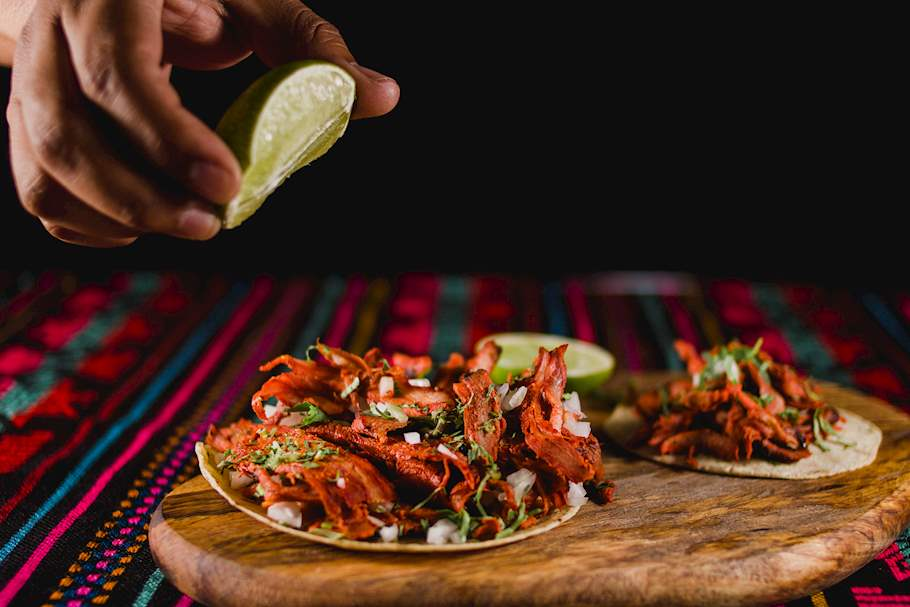

Tacos al Pastor

Description
Tacos al Pastor originated from a wave of Lebanese immigrants to Mexico, brining in their shawarma cusine to the country. As the years passed the original shawarma went through evolutions thanks to the Mexican descendants of the Lebanese immigrants and the usage of ingredients commonly found in the country such as chilies, spices that are native to Mexico. Today tacos al pastor is a popular choice of street food and found all across Mexico, also being known as tacos de trompo or tacos de adobada. Tacos árabes can be found in the state of Puebla, using a combination of middle eastern and Mexican spices.
The pork is marinated in a combination of dried chilies, spices, pineapple, and achiote paste. It is then slowly cooked with charcoal or gas flame on a vertical rotisserie. Once the outside pork is browned and cooked, it is shaved off and made into tacos. There are many possible ingredients that can be used to prepare tacos al pastor, but guajillo chile, garlic, cumin, clove, bay leaf, and vinegar are some of the most common.
Ingredients
- 5lb boneless pork shoulder
- 3 tablespoons achiote paste
- 2 tablespoons guajillo chili powder
- 1 tablespoon garlic powder
- 1 tablespoon dried oregano
- 1 tablespoon cumin
- 1 tablespoon salt
- 1 tablespoon pepper
- 3/4 cups white vinegar
- 1 cup pineapple juice
- 1 pineapple, skinned and sliced into 1-inch (2cm) rounds
For Serving
- 10 small corn tortillas
- 1 white onion, finely chopped
- 1 cup fresh cilantro, finely chopped
- 1 cup salsa
- 1 avocado, diced
- 2 limes, cut into wedges
Special Equipment
- 1 thich wooden skewer, trimmed to the height of your oven
Preparation
- Slice the pork shoulder into about 1-centimeter (¼ in) slices, then transfer to a large dish or bowl. In a medium bowl, combine the achiote paste, chili powder, garlic powder, oregano, cumin, salt, pepper, vinegar, and pineapple juice, mashing and stirring until smooth with no lumps. Pour the marinade over the pork slices, then toss to make sure they are coated on all sides. Cover the bowl with plastic wrap, then refrigerate for at least 2 hours or up to 3 days.
- Preheat the oven to 350°F (180°C). Line a baking sheet with parchment paper or aluminum foil.
- Place a slice or two of the pineapple on the baking sheet. Take a wooden skewer and push it directly in the middle of the pineapple. Remove the pork from the fridge and push the slices through the skewer, layering one after the other until there is a 1-inch (2 ½ cm) gap at the top. Push another pineapple slice on top.
- Bake for about 1½ hours, until the pork is slightly charred on the outside and deep red. Rest the meat for about 10 minutes, then carve off thin slices of pork and roasted pineapple.
- To assemble, place some pork on the tortillas, followed by a few pieces of pineapple, a sprinkling of onion, a pinch of cilantro, and a spoonful of salsa, and some diced avocado. Serve with lime wedges.